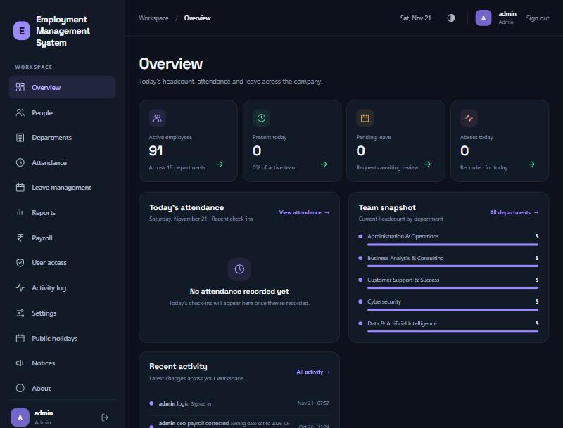
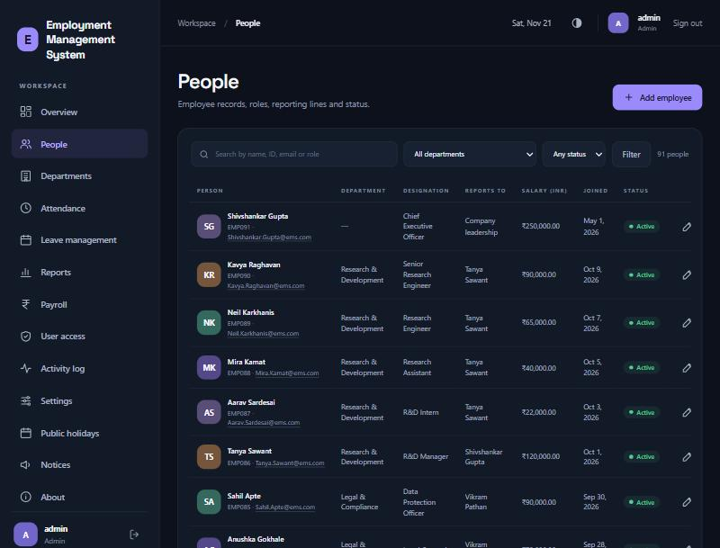
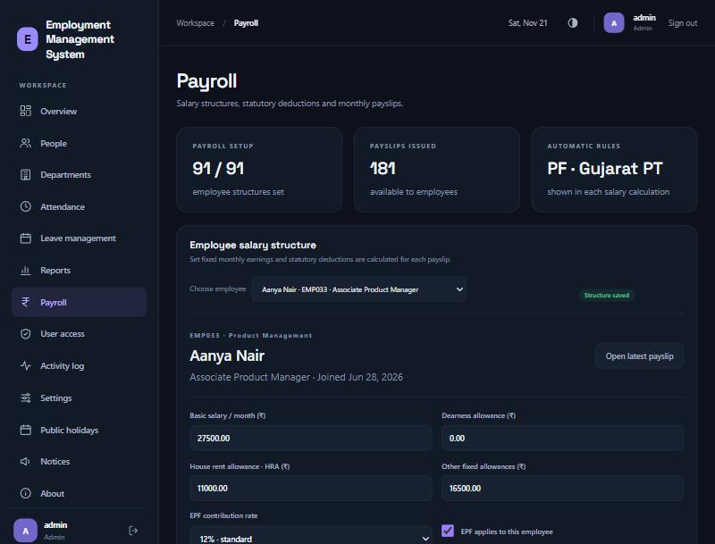

Project by Shivshankar Gupta
Employment Management System
A PHP and MySQL web application for employee records, attendance, leave and payroll. Administrators, HR staff and employees each sign in to their own workspace.
Features
Everything listed here is built into the application.
Role-based workspaces
Separate access for administrators, HR staff and employees, with server-side role checks, hashed passwords, CSRF protection and session expiry.
Employee directory
Search and filter by department and status, add and edit employees, set reporting managers, and activate or deactivate accounts.
Attendance
Staff record attendance for any working day. Employees set their own status as Present, Absent or On Break. Sundays and public holidays are blocked.
Leave management
Casual Leave (LWP), Paid Leave and Sick Leave requests with HR and admin review, notifications, and administrator-set yearly balances.
Payroll
Salary structures, employee PF at 10% or 12% with the wage ceiling, Gujarat professional tax, joining-month proration and printable monthly payslips.
Reports and activity log
Individual employee reports, CSV exports for people, attendance and leave, and an administrator log of sign-ins and changes.
Holidays and notices
An administrator-managed public holiday calendar and notices that appear in employee workspaces.
Responsive interface
Works on phones, tablets and desktops, with a collapsible sidebar and light and dark themes.
Roles
Each role sees only the pages it needs.
| Role | Main access |
|---|---|
| Administrator | Dashboard, people, departments, attendance, leave, reports, payroll, user access, activity log, settings, public holidays and notices |
| HR | Dashboard, people, departments, attendance, leave, reports and notices |
| Employee | Dashboard, own profile, attendance, leave requests, payslips, notices, calendar and notifications |
Screenshots
Taken from the running application in the administrator workspace.



Names and figures in the screenshots are fictional sample data.
Technology
No build step, Composer or npm is required.
- PHP 8.1+ with PDO
- MySQL
- HTML
- CSS
- JavaScript
- XAMPP for local development
Run it locally
The application needs PHP and MySQL, so it runs on a local server such as XAMPP rather than on this page.
- Place the project folder at
C:\xampp\htdocs\EMS. - Start Apache and MySQL in the XAMPP Control Panel.
- In phpMyAdmin, import
database/ems.sql, then select theemsdatabase and importdatabase/seed.sql. - Check
config/database.phpif your MySQL connection differs from the XAMPP defaults. - Open
http://localhost/EMS/and sign in with the starter administrator account described in the setup guide.
Documentation
Word documents included with the project.